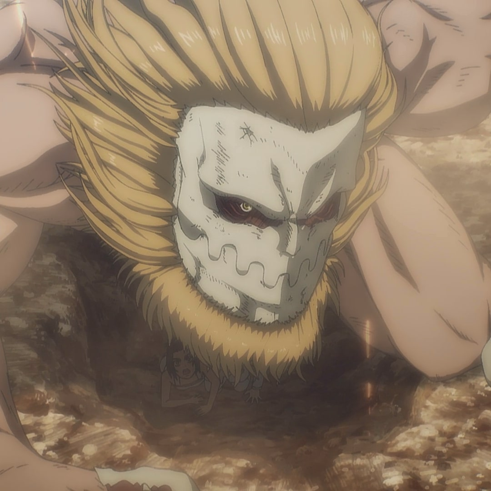
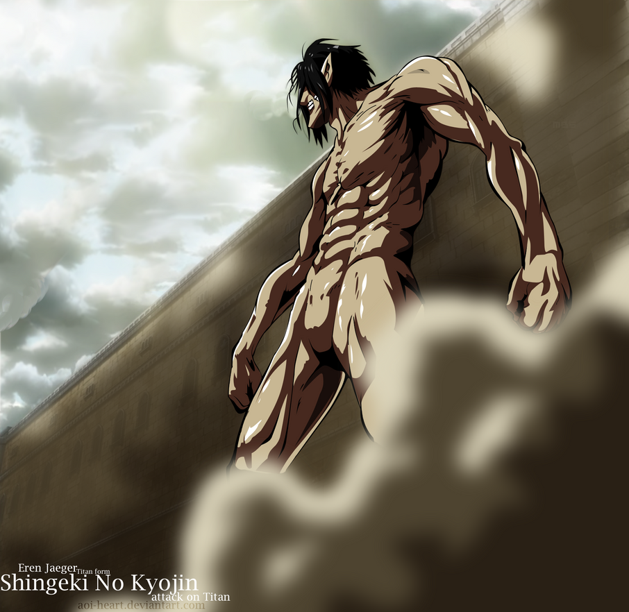
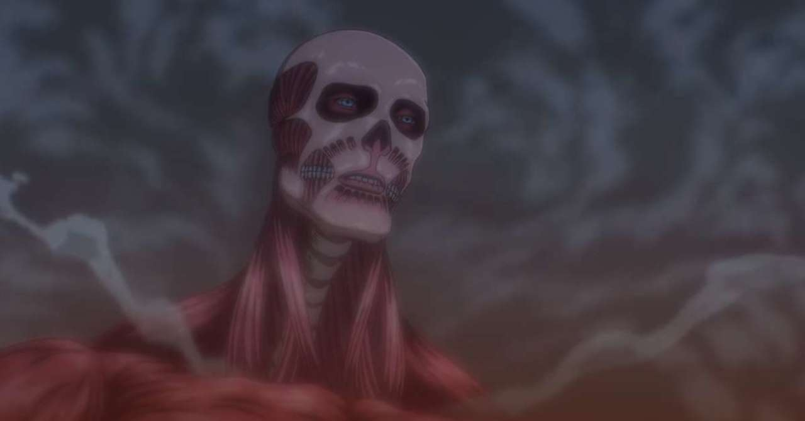
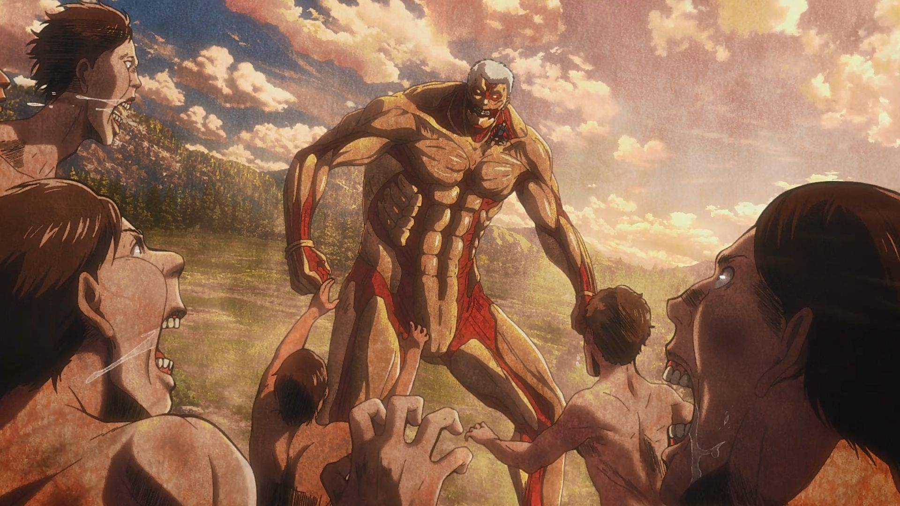
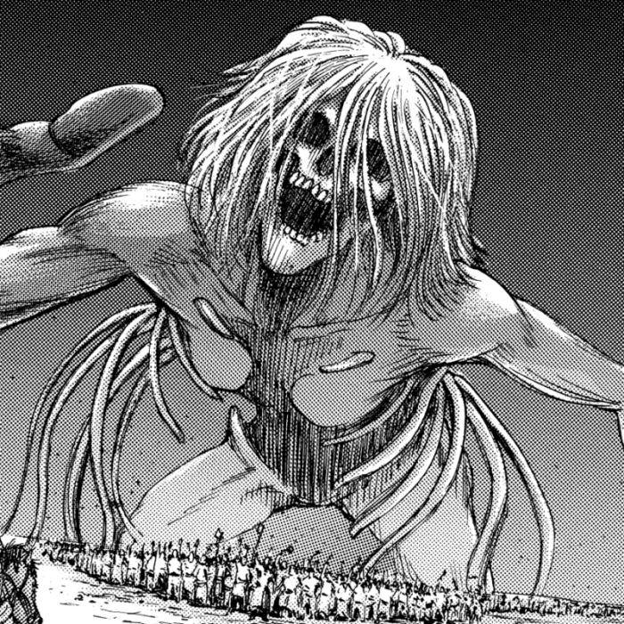
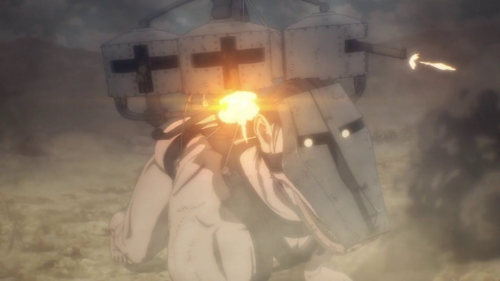
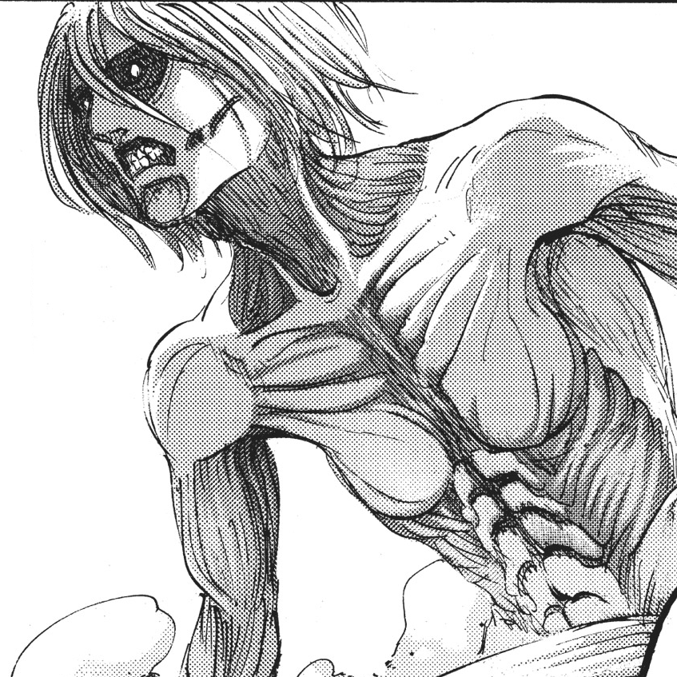
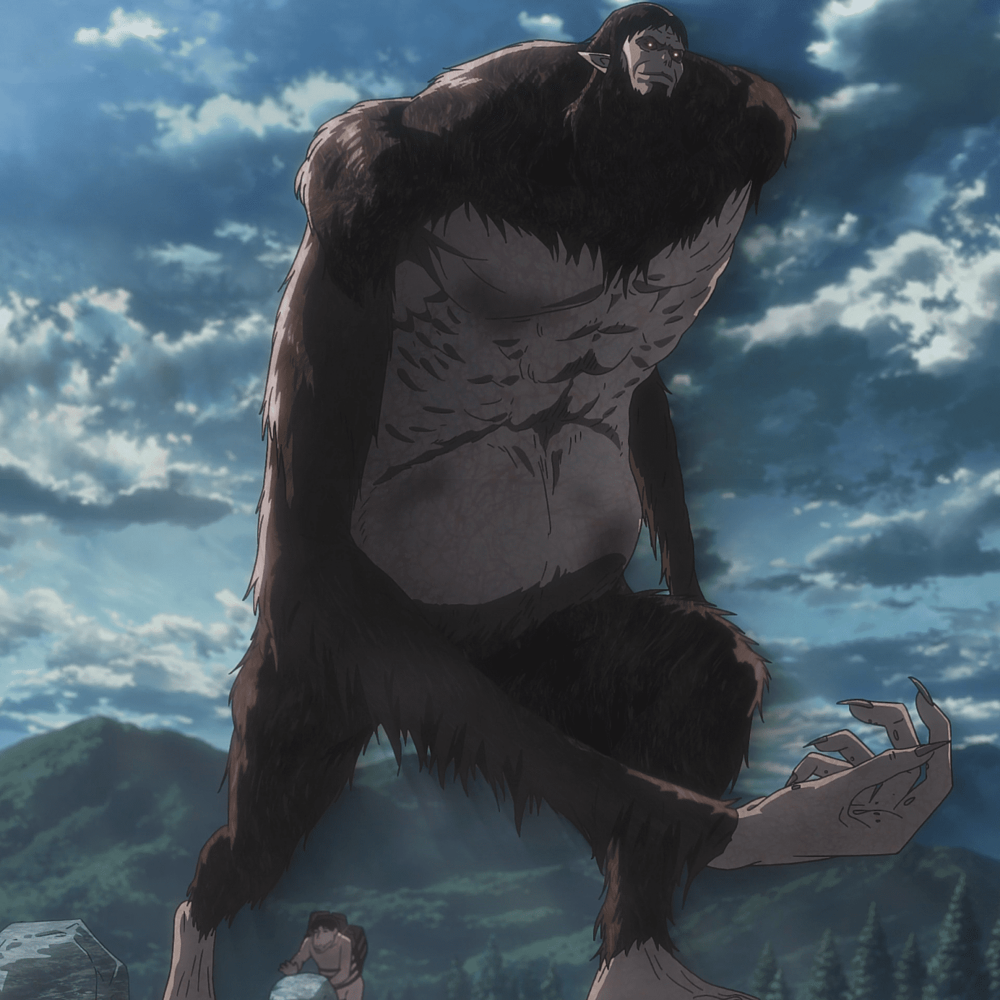
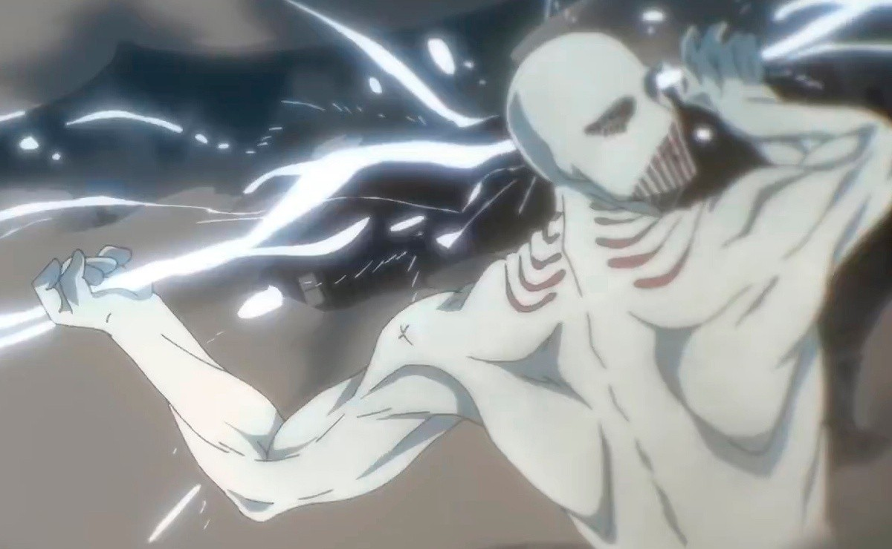

JAW TITAN
The Jaw Titan (顎の巨人 Agito no Kyojin) was one of the Nine Titans with a ferociously powerful set of jaws and claws that were able to tear through almost anything. Due to its small size, it was also known to be the fastest out of the Nine Titans.
ATTACK TITAN
The Attack Titan (進撃の巨人 Shingeki no Kyojin) is one of the Nine Titans that can see through the memories of both its past and its future holders, and has fought for freedom throughout the generations. It is currently in the possession of Eren Jaeger.
COLOSSAL TITAN
The Colossal Titan (超大型巨人 Chō ōgata Kyojin ) was one of the Nine Titans and the early main antagonist of the Attack on Titan series. It was notable for its incredible size and significant control over the steam emitted by its Titan body along with the user being able to successfully control its transformation's power.
ARMOUR TITAN
The Armored Titan (鎧の巨人 Yoroi no Kyojin) was one of the Nine Titans that possessed armored plates of skin across its body.
FOUNDER TITAN
The Founding Titan (始祖の巨人 Shiso no Kyojin) was one of the Nine Titans and the first of all Titans. Its Scream (叫び Sakebi) could create and control other Titans and modify the memories and body compositions of the Subjects of Ymir, but this power had historically only been able to be used by members of the royal family. According to Marley's Titan Biology Research Society, the Founding Titan was the point where the paths connecting all Subjects of Ymir and Titans cross.[3] Because of this, those who hail from Marley sometimes called it the "Coordinate" (座標 Zahyō).
CART TITAN
The Cart Titan (車力の巨人 Shariki no Kyojin) was one of the Nine Titans with a quadrupedal form possessing devastating speed and endurance.
FEMALE TITAN
The Female Titan (女型の巨人 Megata no Kyojin) was one of the Nine Titans and possessed the ability to easily mimic the attributes of the other Titans. It could also selectively harden parts of its skin and attract Pure Titans with its screams, possibly due to its aforementioned mimicry ability.
BEAST TITAN
The Beast Titan (獣の巨人 Kemono no Kyojin) was one of the Nine Titans. Typically, it was slightly larger than most Titans and took on an animal-like appearance.
WARHAMMER TITAN
The War Hammer Titan (戦鎚の巨人 Sentsui no Kyojin) is one of the Nine Titans that possesses the ability to create any structure out of hardened Titan flesh. Until 854, it was kept within the Tybur family for generations following the conclusion of the Great Titan War. It is currently in the possession of Eren Jaeger and fused with both the Attack Titan and Founding Titan.